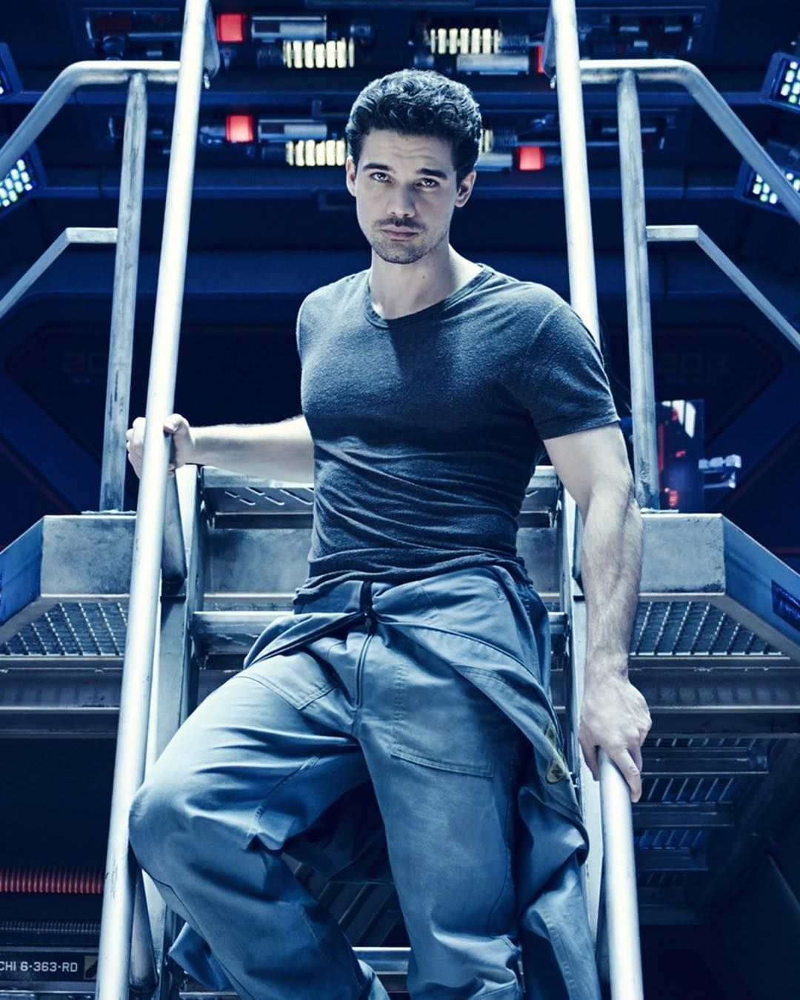
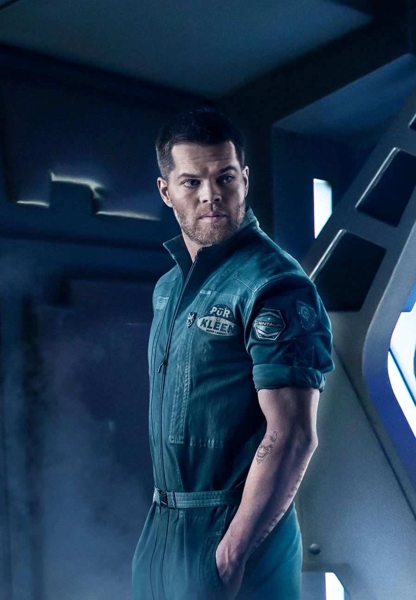
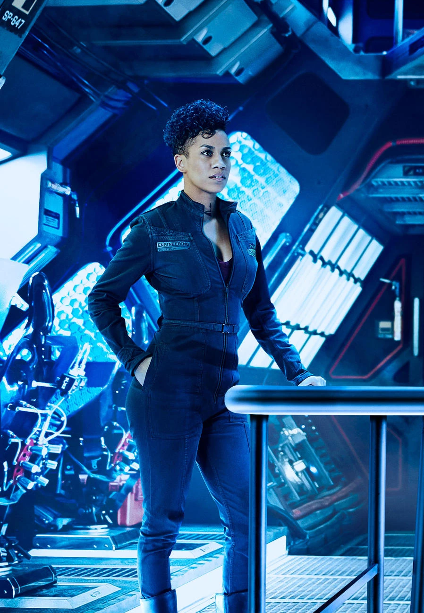
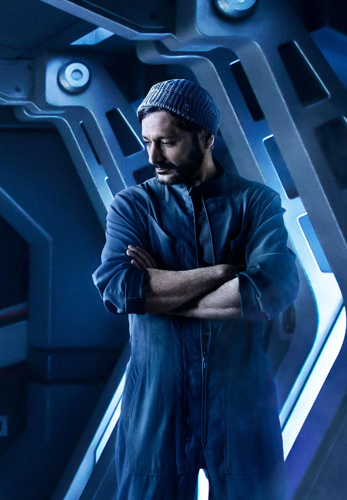
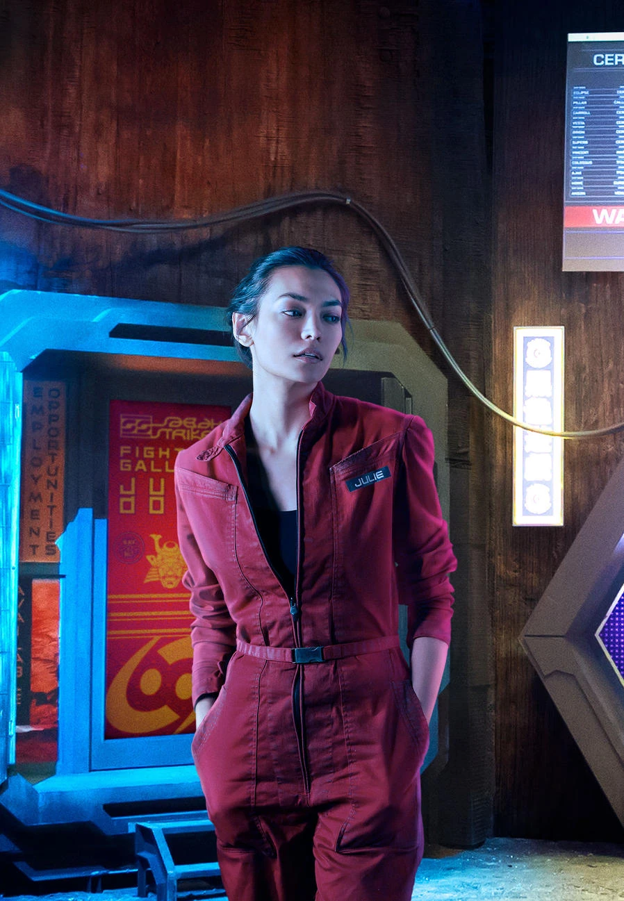
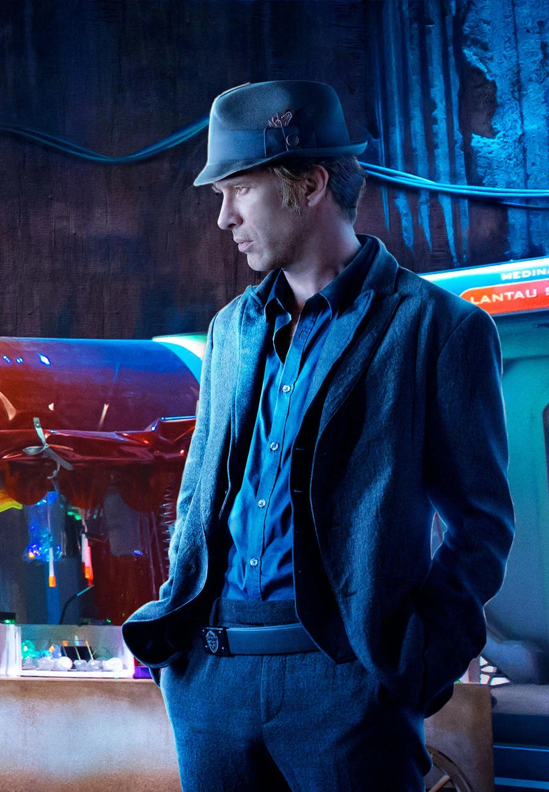

«Простір» (оригінальна назва — «Експансія», англ. The Expanse) — телесеріал у жанрі космічної опери/науково-військової фантастики на каналах Syfy та Prime Video, оснований на однойменній серії романів Джеймса С. А. Корі.
Трейлер
Про серіал
Дія відбувається у майбутньому, де людство колонізувало Сонячну систему, а суперечності між його фракціями загрожують перерости у війну. Розповідь ведеться з точок зору корабельного офіцера Джеймса Голдена (Стівен Стрейт) і його команди, що опиняються в центрі подій, де поєднуються політичні інтриги та діяльність позаземного розуму.
Події розгортаються у XXIII столітті. Людство колонізувало Місяць, Марс, численні астероїди й супутники планет-гігантів. Завдяки винаходу нових двигунів польоти в межах Сонячної системи займають лічені дні, проте міжзоряні подорожі все ще не почалися. Земля, що перебуває під керівництвом ООН, перенаселена. Ресурсів планети бракує, щоби підтримувати життя 30 млрд її жителів, близько половини яких безробітні та утримуються на державному забезпеченні. Марс має автономію та активно розбудовує міста під куполами і здійснює тераформінг. Ці дві планети споживають ресурси, добуті на астероїдах.
Супутники зовнішніх планет, такі як Європа, Іо і Ганімед, порівняно самодостатні та навіть здійснюють експорт сировини. За час існування колоній у їхніх жителів дещо змінилася фізіологія. Так, у марсіан легший скелет і вони фізично слабші, порівняно з землянами, а в так званих астероїдян проявляється астенія. Корпорації експлуатують астероїдян, що спричиняє бунти, виникають терористичні рухи та піратство. Суперечності між фракціями людства загрожують вилитися у війну. Триває гонитва озброєнь і для початку військових дій лишається тільки знайти привід.
Галерея

Капітан Джеймс Голден

Амос Бертон

Наомі Нагата

Алекс Камал

Джульєтт Андромеда Мао

Детектив Джозеф Міллер

Крісджен Авасарала


Головні актори
- Стівен Стрейт - Капітан Джеймс Голден
- Вес Четем - Амос Бертон
- Домінік Тіппер - Наомі Нагата
- Кас Анвар - Алекс Камал
- Флоранс Февр - Джульєтт Андромеда Мао
- Томас Джейн - Детектив Джо Міллер
- Шохре Агдашлу - Крісджен Авасарала
Інформація про серіал
| Роки випуску | 2015-2022 |
|---|---|
| Розробка | Марк Фергюс, Говк Остбі |
| Жанр | космічна опера, наукова фантастика |
| Кількість сезонів | 6 |
| Кількість епізодів (заг.) | 62 |
| Тривалість епізоду | 44 хв. |
Список епізодів
-
- Крізь простір (Dulcinea)
- Корабель «Кентербері» (The Big Empty)
- Зіткнення (Remember the Cant)
- CQB (CQB)
- Повернення м'ясника (Back to the Butcher)
- Рок-Боттом (Rock Bottom)
- Швидкість втечі (Windmills)
- Ганімед (Salvage)
- Крізь темряву (Critical Mass)
- Левіафан прокидається (Leviathan Wakes)
-
- Двері та кути (Doors & Corners)
- Зміна парадигми (Paradigm Shift)
- Ухилення (Static)
- Встановлення запобіжника (God Speed)
- Дім (Home)
- Час на роздуми (Paradox)
- Модельний організм (The Seventh Man)
- Шляхи роздоріжжя (Pyre)
- Суворо за статутом (The Weeping Somnambulist)
- Скарб Калібана (Cascade)
- Тут немає прірви (Here There Be Dragons)
- Життя Всесвіту (The Monster and the Rocket)
- Полум'я Калібана (Caliban's War)
-
- Проект «Ексодус» (Fight or Flight)
- Втрачені космополіти (IFF)
- Моє світло (Assured Destruction)
- Рестарт (Reload)
- Критична точка (Triple Point)
- Самопожертвування (Immolation)
- Втрачені птахи (Delta-V)
- Це не корабель (It Reaches Out)
- Робота та відпочинок (Intransigence)
- Пастка (Dandelion Sky)
- Вірю (Fallen World)
- Абаддонська брама (Congregation)
- Врата (Abaddon's Gate)
-
- Ерік (New Terra)
- Розрив (Jetsam)
- Дипломатія випаленої землі (Subaru)
- Колір Сплячого Бога (The Color of Insolence)
- Маленькі втрати (Aversarala)
- Відлуння (Displacement)
- Старе світло (Old Terra)
- Шлях (The One-Way Glass)
- Кровотеча (Cibola Burn)
- Попелястий шторм (Nemesis Games)
-
- Вихід (Exodus)
- Життєвий простір (Churn)
- Мати (Mother)
- Гаугамела (Gaugamela)
- Породи (Triple Canopy)
- Засипані попелом (Down and Out)
- Струмінь Ойкумени (Oyedeng)
- Втеча з Нері (Hard Vacuum)
- Віггам (Winnipesaukee)
- Дим і дзеркала (Nemesis Games)
-
- Дивні птахи (Strange Dogs)
- Велике мовчання (Azure Dragon)
- Спина (Force Projection)
- Червоні лінії (Redoubt)
- Човники Бога (Why We Fight)
- Вавилонський попіл (Babylon's Ashes)